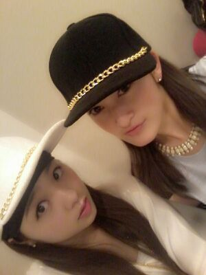

| 2013/06 21 Fri | 僕は...この赤と白ギンガムチェッ クワンピ で乃木坂46のオ ーディションに受かりました(・ □・)！！わら |
こんにちわん(・ω・)
ろってぃ−です.
楽屋にて... ちはるとアニアニとかずみ。

前回のblogで
皆の好きな料理のメニューを
調査したところ,
ななんと、なんと
色々なメニューがあがっよ(・Д・)！！
ハンバーグとかオムライスとか
多いねえ^^
麺類、カレー、唐揚げ、魚とかねっ
ヽ(´▽｀)/
まひろとかぶってる方いますかあ？？
まひろは、なぜだかしらんが
野菜炒めとロールキャベツが
大好きよ(〃∨〃)
他にも沢山あるけどね♪
パスタも大好き.
ラーメンは担々麺好きよんよん.
ぴょん.
これ せっちゃんとお揃いの帽子なの。

『EX大衆』見た方いますか？？
あの取材をした日の晩
『俺の妹がこんなに可愛い訳がない。』
３枚借りに行ったんだよ(^ー^)
だからアニメ ６回分見たよ！
新しい振り付けの
レッスンがあったりして
頑張っていまぁ〜す//
ではでは 今日もこれから
ドライヤー )))
ばいばいん ろってぃ−でした♪
コメント(223)
2013/06/21 00:00